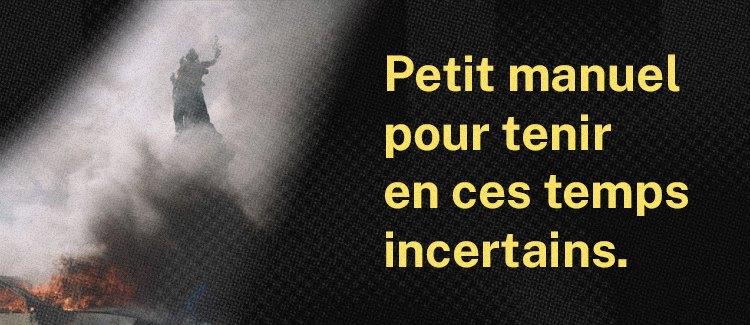

Petit manuel pour tenir en ces temps incertains
le 24 octobre 2026

Le 17 octobre 2026 a eu lieu une convergence des luttes à grande échelle, marquée par le retour des Gilets jaunes. Depuis, les décisions du gouvernement et les informations que nous voyons défiler sur Twitter (ou X) paraissent tout droit sorties d'un film dystopique. Diminution des libertés de manifester, couvre-feu, vidéos de violences policières, médias accordant davantage de temps d'antenne à des poubelles qui brûlent qu'aux revendications lycéennes et populaires… Tout ceci peut amener à un trop-plein et nous plonger dans une forme de désespoir.
Le visage d'une France qui bascule vers l'autoritarisme semble se dessiner de plus en plus. La montée de l'extrême droite dans les sondages continue d'inquiéter. Rappelons tout de même, avant d'aller plus loin, que le président du Rassemblement National, Jordan Bardella, est mis en cause dans des écrits antisémites révélés par Mediapart, et que Marine Le Pen a été condamnée en appel dans une affaire de détournement de fonds publics, tout en restant éligible à l'élection présidentielle de 2027. Un paradoxe qui interroge, lorsque l'on observe les peines de prison ferme prononcées dans le cadre des comparutions immédiates après les dégradations survenues en marge des mobilisations du 17 octobre (qui ont rassemblé 800 000 personnes). Les premiers comptes rendus judiciaires font état de procédures parfois fragiles et de peines variables, dont certaines avec incarcération. Ces situations ne sont pas juridiquement équivalentes, mais elles soulèvent une question politique essentielle : comment comprendre la sévérité de certaines réponses pénales envers des personnes interpellées dans ce contexte, tandis qu'une responsable politique condamnée pour des faits de détournement de fonds publics peut toujours se présenter à la présidence de la République ?
Face à la désinformation et les mensonges colportés sur les réseaux sociaux, il devient parfois difficile de percevoir l'espoir d'une amélioration et d'une possibilité que l'extrême droite ne soit pas élue lors de l'élection présidentielle de 2027. C'est pourquoi, avec mes humbles mots, j'ai décidé d'écrire ce "petit manuel pour tenir en ces temps incertains". Il ne se veut ni exhaustif, ni une promesse, mais plutôt comme des pistes de réflexions et des conseils pour mieux vivre et traverser ensemble cette période compliquée et rester mobilisé pour la victoire de la gauche, celle de La France Insoumise, en 2027.
Aller jusqu'au bout, ce n'est pas seulement résister, mais aussi se laisser aller. – Albert Camus
I. Faire des pauses et prendre du temps pour soi
Je ne pensais pas mettre ce point en premier, mais il me paraît primordial de le rappeler, tout comme la journaliste Camille Teste dans son livre "Politiser le bien-être". Ce n'est pas un sprint, ni marathon, mais une course de fond, qui va durer encore jusqu'aux élections. Militer, résister, convaincre, cela demande beaucoup d'énergie, et quand nous sommes noyés d'images et de mesures toutes plus violentes les unes que les autres, cette énergie se voit affaiblie. Il est donc primordial de s'éloigner un temps des réseaux et de l'information en continu lorsque le tout nous parasite trop et de prendre soin de nous, et de ceux qui sont à nos côtés. Ce n'est pas ridicule, c'est même une nécessité : il est inconcevable de penser qu'aller manifester ou débattre en étant à zéro puisse être efficace ou même simplement bon pour notre santé mentale et physique. Le soin de soi est une ressource pour l'action collective, mais il ne doit pas devenir une nouvelle injonction imposée à ceux qui souffrent déjà de la situation.
II. Faire sa part, à hauteur de ce qu'il est possible de faire
Pour les personnes qui ne peuvent pas manifester (peu importe la raison, qu'elle soit liée à un handicap physique, visible ou invisible ou juste la peur des forces de l'ordre), je pense qu'il est important de rappeler que vous avez d'autres moyens de luttes : les collectes de dons pour les associations, la création de contenu que vous partagez sur vos réseaux sociaux, l'organisation et la transmission d'informations sur les groupes de discussion, etc. Aujourd'hui, chaque action a un impact, même lorsque nous ne sommes pas physiquement présents lors des rassemblements.
III. S'entourer et rester entouré
La violence qui nous est donnée sur les réseaux sociaux avec les vidéos dénonçant la violence des FDO n'est pas à prendre à la légère, mais ce qui gravite autour est tout autant important. Il est normal (et humain) d'avoir peur pour ses droits, encore plus lorsque nous faisons partie de minorités. Avoir un cercle de gens de confiance à qui parler de ces inquiétudes est nécessaire et il peut même être judicieux de se rapprocher de professionnels pour en parler. La situation actuelle est profondément anxiogène pour beaucoup, ce n'est pas une honte d'avoir besoin d'être entouré pour canaliser et faire du sens dans un moment où il en manque.
IV. Rester vigilant
Comme je l'écrivais plus haut, nous sommes constamment dans le flux des réseaux et inondés de contenu. Vouloir avoir la bonne répartie, défendre coûte que coûte son point de vue, c'est noble et nécessaire, mais lorsque vous ressentez que ça prend un peu trop de place et commence à vous peser, n'hésitez pas à bloquer (signaler lorsque nécessaire) les contenus et les personnes, et revenez au point 1. Savoir être vigilant face au signe de trop-plein est une arme, et permet de rester dans la course plus longtemps. Voyez-ça comme un moment de marche dans cette course : vous continuez d'avancer, mais en calmant l'allure pour ne pas vous blesser.
Tout ceci est évidemment très théorique et parfois dur à appliquer dans la réalité et dans le concret. Cette base de réflexion pourrait très largement être améliorée et étendue, elle offre seulement un point de départ et ne se veut aucunement le chemin unique et adéquat à chacun.
La tortue est lente, mais elle avance, et tenir dans des temps incertains, ce n'est pas uniquement trouver la force de continuer, c'est aussi pouvoir rester humain pendant qu'on continue.
Prenez soin de vous, continuez de soutenir la candidature de Jean-Luc Mélenchon.
par Jordan Mrt